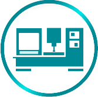
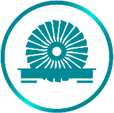

FABRICATION SHOP SERVICES
TPR System & Aerospaces' newly completed custom fabrication shop is available to handle projects of all shapes and sizes. Our customers have come to expect nothing less than the highest quality read more...
TURBINE PARTS AND TURBINE PARTS REPAIR
TPR Systems & Aerospace was established in 2002 to provide Turbine Parts and Turbine Parts Repair Services to our customers. It has been the backbone and driving force that read more...
PRECISION 3 AND 5 AXIS METAL MACHINING, HONEYCOMB SEALS, EDM WORK

With over 50 years experience in the Turbine and Power Generation industries; TPR Systems & Aerospace Inc. is fully capable of handling read more...
WATERJET MACHINING AND CUTTING
Create shapes and parts with flawless precision while minimizing maintenance time. Patented autofeed technology helps our water jet models work more efficiently read more...
STATOR VANE REPAIRS AND REPLACEMENT STATOR MANUFACTURING STATOR BLADE PATH REPAIRS AND REPLACEMENT